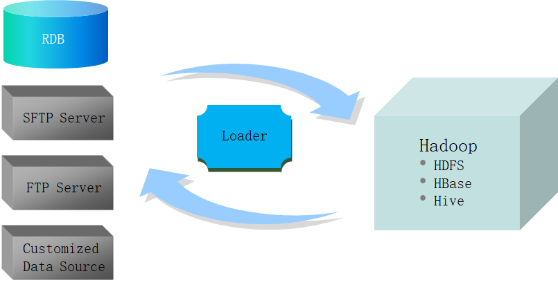

什么是Loader（基于开源Sqoop研发，做了大量优化和扩展）
- Loader是实现FusionInsight HD与关系型数据库、文件系统之间交换数据和文件的数据加载工具。提供可视化向导式的作业配置管理界面；提供定时调度任务，周期性执行Loader作业；在界面中可指定多种不同的数据源、配置数据的清洗和转换步骤、配置集群存储系统等。
Loader的应用场景（Hive不能出去）

- Loader实现FusionInsight与关系型数据库、文件系统之间交换数据和文件，可以将数据从关系型数据库/文件服务器导入到FusionInsight HDFS/HBase/Hive中，或者反过来从Hadoop HDFS/HBase导出到关系型数据库/文件服务器中。
- Loader提供了本集群内部HDFS和HBase之间的数据导入/导出。
- RDB，Relational Data Base，关系型数据库。
- Customized Data Source:支持插件式，扩展外部数据源。
注：当前不支持Hive导出。
产品中的位置：

Loader特点
所有的操作都是在主的设备上进行的
Loader作业管理界面
Loader作业管理界面 - 作业转换规则
- Loader转换算子：
- 长整型时间转换：实现长整型数值与日期类型的互换。
- 空值转换：将空值替换成指定值。
- 增加常量字段：生成常量字段。
- 随机值转换：生成随机数字段。
- 拼接转换：拼接已有字段，生成新字段。
- 分隔转换：将已有字段，按指定分隔符，分隔出新字段。
- 取模转换：对已有字段取模，生成新字段。
- 剪切字符串：通过指定起止位置，截取已有字符串类型的字段，生成新字段。
创建Loader作业 - 基本信息
- 配置作业的基本信息，包括名称、类型、数据源连接，所属分组，队列和优先级。
- 当没有需要的连接时，可以通过“连接”属性后的“添加”功能，创建连接。
- 名称：指定当前作业的名称，名称需要唯一。
- 类型：指定作业的类型，可选值：导入、导出。
- 连接：当前作业需要使用的数据源连接信息。
- 组：作业的分组。
- 队列：作业所属的Yarn队列。
- 优先级：作业在Yarn中的优先级。
创建Loader作业 - 输入设置
创建Loader作业 - 数据转换
- Loader转换原理：
- 读取源端数据，通过输入算子将数据按规则一一转换成字段，再通过转换算子，对这些字段做清洗或转换，最后通过输出算子将处理后的字段，输出到目标端。
- Loader算子包括以下类型：
- 输入算子：数据转换的第一步，负责将数据转换成字段，每次转换有且只能有一种输入算子，涉及HBase或Hive导入导出时，必须填写。
- 转换算子：数据转换的中间转换步骤，属于可选类型，各个转换算子可任意搭配使用。转换算子是针对字段而言，必须先使用输入算子，将数据转换成字段。
- 输出算子：数据转换的最后一步，每次转换有且只能有一种输出算子，用于输出处理后的字段。涉及HBase或Hive导入导出时，必须填写。
创建Loader作业 - 输出
- 存储类型：数据的目标存储类型，可选择HDFS、HBASE和HIVE。
- 文件类型：文件导入的方式，可选择TEXT_FILE(以文本文件的方式按行导入)、BINARY_FILE(以二进制的方式读字节导入)、SEQUENCE_FILE(以序列化文件的方式导入)。
- 压缩格式：导入后HDFS后，指定压缩格式存储数据。
- 输出目录：目标目录。
- 文件操作方式：如果目标目录下已存在需要导入的文件时，提供的操作策略，以决定这种同名文件导入的方式。
- OVERRIDE：表示直接覆盖老文件。
- RENAME：将新文件重命名后导入目标目录。
- APPEND：在老文件基础上追加新文件的内容。
- IGNORE：直接忽略新文件，保留老文件。
- ERROR：发现有同名文件，直接报错。
- 个数：map任务的个数。
监控作业执行状态 - 脏数据查看
- 脏数据是指不符合Loader转换规则的数据，查看方式如下：
- 在作业历史查看界面上，发现跳过记录数不为0时，点击“脏数据”按钮，进入该次作业执行产生的脏数据目录。
- 脏数据存放在HDFS，每个Map Task处理的脏数据分别记录到相应文件。
客户端脚本介绍
- Loader除了提供图形化操作界面外，还提供了一套完整的shell脚本，通过这些脚本，可实现数据源的增删查改，作业的增删查改、启动作业、停止作业、查看作业状态，判断作业是否正在运行等功能。
- 脚本介绍如下：
- lt-ctl ：简称作业控制工具，用于查询作业状态、启动作业、停止作业以及判断作业是否在运行中。
- lt-ucj：简称作业管理工具，用于查询、创建、修改和删除作业。
- lt-ucc：简称数据源管理工具，用于查询、创建、修改和删除数据源连接信息。
- 下载并安装Loader客户端，脚本位于${客户端安装路径}/Loader/loader-tools-1.99.3/loader-tool/bin。
- 创建连接器样例脚本：./lt-ucj -l /opt/hadoop_client/Loader/loader-tools-1.99.3/loader-tool/job-config/login-info.xml -w ，/opt/hadoop_client/Loader/loader-tools-1.99.3/loader-tool/job-config/sftp-to-hdfs.xml -a create。
- 创建作业样例脚本：./lt-ucc -l /opt/hadoop_client/Loader/loader-tools-1.99.3/loader-tool/job-config/login-info.xml -w ，/opt/hadoop_client/Loader/loader-tools-1.99.3/loader-tool/job-config/sftp-to-hdfs.xml -a create。
- 提供作业样例脚本：./lt-ctl -l /opt/hadoop_client/Loader/loader-tools-1.99.3/loader-tool/job-config/login-info.xml -n jobName -a start。
总结：脚本介绍，算子，转换规则